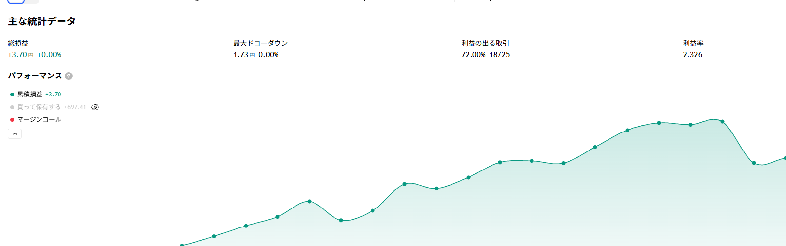

総損益
+3.63 円
建玉中込み +3.59 円
利益率（PF）
2.333
建玉中込み 2.300
勝率
72.0%
18 勝 / 25 取引
最大ドローダウン
1.73 円
含み損も数えた谷
取得日時 2026-11-13 06:10 JST（この日さかのぼれた範囲 2026-10-13 〜 2026-11-12）
このページはその日の TradingView 画面そのままです。古い取引も含めた通算はトップページにあります。
ChartArt「Bollinger + RSI, Double Strategy」v1.1 の日本語表示版。ロジックは原本と同じで、矢印を「買い／売り」表示にして評価損益を円で出すようにしたもの。アラート2本（1時間足・3分足）が稼働中。前回（2026-11-12 06:07）の取得時に建玉中だった売り（2026-11-10 21:36 建て・158.204）は、2026-11-12 09:33 に 159.653 で決済され -1.45 円の損切りでした（この間に USDJPY が上昇したため）。その後、買い（2026-11-12 09:33 建て→16:36 決済）で +0.17 円、続けて新しい売り（2026-11-12 16:36 建て・159.821）を今も保有中です（評価損益 -0.04 円、現値 約159.86）。確定済みの通算（26件目を除く）は +3.63 円、保有中の含み損を含めた総損益は +3.59 円です。
戦略レポート（主な統計データと累積損益カーブ）

画像をタップすると原寸で開きます
この日の取引一覧
26 件（新しい順）
日時は上がエントリー・下が決済。小さい字は価格です。
| # | 方向 | 日時 | 損益 (円) | 累積 (円) |
|---|---|---|---|---|
| 26 | 売 | 11/12 16:36 ↓ 建玉中 159.821 → （未決済） | -0.04 | +3.59 |
| 25 | 買 | 11/12 09:33 ↓ 11/12 16:36 159.653 → 159.821 | +0.17 | +3.63 |
| 24 | 売 | 11/10 21:36 ↓ 11/12 09:33 158.204 → 159.653 | -1.45 | +3.46 |
| 23 | 買 | 11/09 16:36 ↓ 11/10 21:36 158.094 → 158.204 | +0.11 | +4.91 |
| 22 | 売 | 11/06 16:09 ↓ 11/09 16:36 158.031 → 158.094 | -0.06 | +4.80 |
| 21 | 買 | 11/06 02:39 ↓ 11/06 16:09 157.773 → 158.031 | +0.26 | +4.86 |
| 20 | 売 | 11/05 19:51 ↓ 11/06 02:39 158.363 → 157.773 | +0.59 | +4.60 |
| 19 | 買 | 11/03 16:48 ↓ 11/05 19:51 157.799 → 158.363 | +0.56 | +4.01 |
| 18 | 売 | 11/02 09:33 ↓ 11/03 16:48 157.719 → 157.799 | -0.08 | +3.45 |
| 17 | 買 | 10/30 06:39 ↓ 11/02 09:33 157.668 → 157.719 | +0.05 | +3.53 |
| 16 | 売 | 10/29 00:36 ↓ 10/30 06:39 158.199 → 157.668 | +0.53 | +3.48 |
| 15 | 買 | 10/28 14:54 ↓ 10/29 00:36 157.816 → 158.199 | +0.38 | +2.95 |
| 14 | 売 | 10/27 11:00 ↓ 10/28 14:54 157.659 → 157.816 | -0.16 | +2.56 |
| 13 | 買 | 10/26 11:48 ↓ 10/27 11:00 156.721 → 157.659 | +0.94 | +2.72 |
| 12 | 売 | 10/26 10:03 ↓ 10/26 11:48 157.057 → 156.721 | +0.34 | +1.78 |
| 11 | 買 | 10/22 13:45 ↓ 10/26 10:03 157.719 → 157.057 | -0.66 | +1.45 |
| 10 | 売 | 10/22 04:18 ↓ 10/22 13:45 158.26 → 157.719 | +0.54 | +2.11 |
| 9 | 買 | 10/21 21:48 ↓ 10/22 04:18 157.942 → 158.26 | +0.32 | +1.57 |
| 8 | 売 | 10/21 10:09 ↓ 10/21 21:48 158.307 → 157.942 | +0.37 | +1.25 |
| 7 | 買 | 10/20 23:48 ↓ 10/21 10:09 157.983 → 158.307 | +0.32 | +0.88 |
| 6 | 売 | 10/19 19:18 ↓ 10/20 23:48 158.21 → 157.983 | +0.23 | +0.56 |
| 5 | 買 | 10/16 13:09 ↓ 10/19 19:18 157.935 → 158.21 | +0.28 | +0.33 |
| 4 | 売 | 10/16 00:42 ↓ 10/16 13:09 158.126 → 157.935 | +0.19 | +0.06 |
| 3 | 買 | 10/14 12:45 ↓ 10/16 00:42 158.234 → 158.126 | -0.11 | -0.13 |
| 2 | 売 | 10/14 10:36 ↓ 10/14 12:45 158.423 → 158.234 | +0.19 | -0.03 |
| 1 | 買 | 10/13 06:12 ↓ 10/14 10:36 158.638 → 158.423 | -0.21 | -0.21 |
⚠️ 数字を読むときの注意
- 取得日時は 2026-11-13 06:10 JST。TradingView の Essential プランはさかのぼれる期間が日ごとにずれるため、後日まったく同じ操作をしても集計期間と数字が変わります
- TradingView の画面に出る「利益率」は建玉中の評価損益を含みません。いま建玉中が -0.04 円あり、含めると利益率は 2.333 → 2.300 になります
- 表の損益はスプレッドや実際の約定ズレを含みません。実口座の成績とは一致しません
- 最大ドローダウンは、決済ごとの累積損益に加えて保有中の含み損も谷として数えています。TradingView の表示と計算の土俵が違うことがあります
- この戦略は5分足6年の独立検証では利益率 0.924（ランダムに入った場合より悪い）でした。ここに出ている短期の高い利益率は、期間の取り方で出ることがあります
- 3分足は長期の裏取りができません（手持ちの検証データは最短5分足）